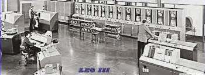
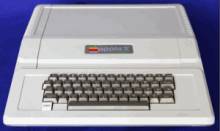

Like many things here in Silicon Valley, Math Open Reference did not start from some grand plan. I was volunteering at my son's school on its technology committee, and being a software engineer, I was quickly struck by the absurdity of his backpack. It weighed 20lb (half his body weight at the time) and contained mostly data.
It was a jarring thought that here in the valley, he is carrying data encoded as black marks on slices of dried wood pulp that would easily fit on a flash drive.
I have always loved designing and building things, so I set to thinking about what a modern digital textbook would be like. It should not be just a copy of the text on a screen. It seemed clear that it should be interactive in some way to engage the student more, and and the capacity to reveal truths about the subject you could not show in static text. Teachers would use it as a tool to demonstrate concepts to a class to deepen understanding and engender curiosity to explore. The trick, I thought, was to use the power of the computer and not just mimic paper.
[By the way: I have often felt that tablets like the iPad fail in this way - they seem to be trying to mimic that static textbooks they are replacing. They seem to want students to remain passive consumers of information]
A software designer is an artist - computer code the medium. First one must know what to paint. As such, good software design involves a study of people, users not computers. How do people learn to use a new design? How do they want to use it once they understand it? What message or idea are you really trying to convey? It has everything to do with how we perceive things and build mental models of our world.
In building Math Open Reference, my resolve was to design tools that made the learning and teaching of math concepts engaging, exploratory and fun. So the first test page was for the isosceles triangle. It's easy enough to explain that it is a triangle with two congruent sides, but so what?
It occurred to me to try the idea of "feature invariance". I had a triangle where you could drag any vertex about. But what I added was code that moved other points as needed to ensure that it stayed isosceles. You could not drag any point and make a triangle that was not isosceles. I hoped that the student would
In the classroom, I visualized a teacher wiggling it about (or better let a student wiggle it about) and ask the class what was always true about the shape. The discussion would hopefully lead to its "isosceles-ness" in a way that made them really think hard about it.
I did a few pages like that and put them on the web. The reactions were very positive, as judged by emails and that fact that the pages shot up the Google page ranking system very fast. I have been adding to it ever since.

I have been working on computers pretty much since there were computers. Out of school in England I worked at LEO who made one of the first commercial computers in Europe. By modern standards a big lumbering beast. But amazingly, it could multi-task, running 3 or 4 jobs concurrently in 128k of magnetic core memory.
My next stop was at Hewlett-Packard, who were just entering the computer business. I wound up in Cupertino California (also the home of Apple) building database management systems for HP3000 mini-computers

Three of us eventually left HP to start a software company in response the the Apple II personal computer and later the IBM PC. We managed to squeeze an office software suite (pfs) into a 48k 8 bit micro computer with no hard drive. That company (Software Publishing Corp) was actually the first ever software company to go public. Before Microsoft even!
So the above and other projects left me free to do what I love to do - which is build things. Building this resource has been incredibly rewarding. And it's not done yet! Where is it going next? What do you think?
John Page